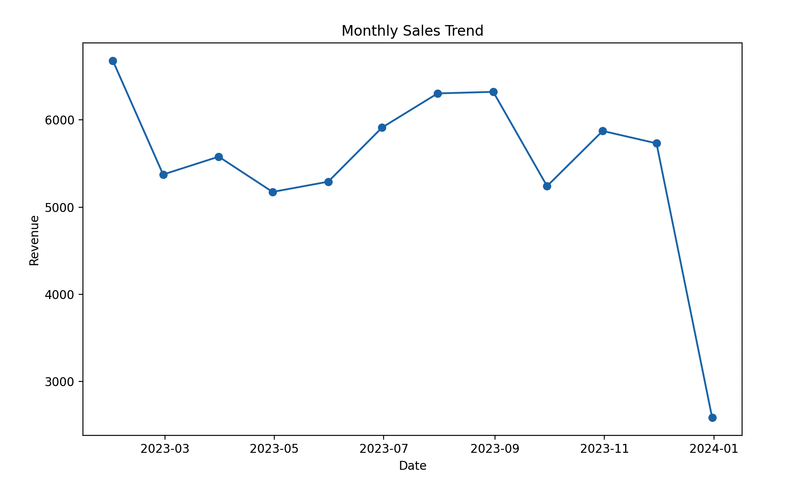
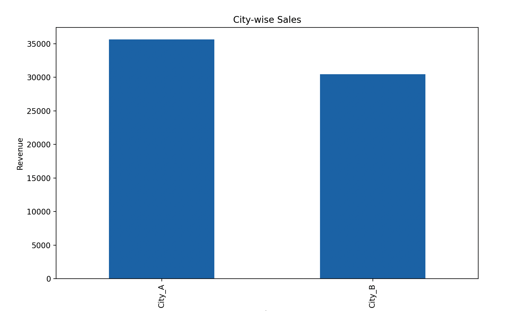
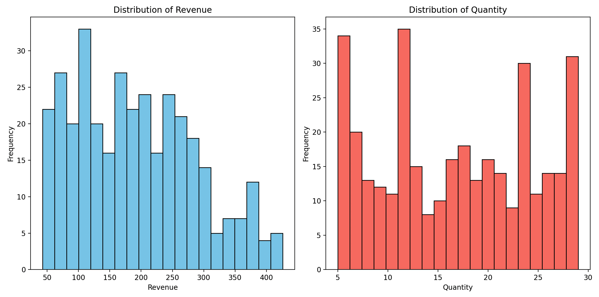
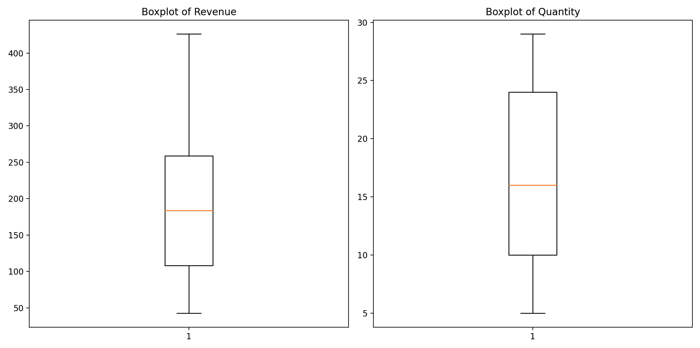

🧹 Pandas 进阶：读写、清洗与分组透视
基础打好后，这一讲解决实际数据处理的五类高频问题：数据从哪来到哪去（CSV/MySQL/JSON 读写）、表怎么改（增删改查与去重）、脏数据怎么办（缺失值处理）、多表怎么合（concat/merge）、怎么按组统计（groupby 聚合、过滤与交叉表/透视表）。
本讲示例继续使用股票、电影、GDP 和优衣库销售数据集。
一、文件读取与存储
Pandas 支持众多文件格式的 IO 操作：CSV、SQL、XLS、JSON、HDF5 等，常用 API 都是成对的 read_xxx() / to_xxx()。
1. CSV
# 读取: sep 分隔符默认逗号; usecols 指定只读取某些列 data = pd.read_csv('./data/stock_day.csv', usecols=['open', 'close']) # 存储: 选取10行保存, columns 选择要保存的列 data[:10].to_csv('./data/test.csv', columns=['open']) # 默认会把行索引也存成一列(Unnamed: 0); index=False 可以去掉 data[:10].to_csv('./data/test.csv', columns=['open'], index=False)
to_csv 的常用参数：path_or_buf 路径、sep 分隔符、columns 列选择、header 是否写列名、index 是否写行索引、mode（'w' 重写 / 'a' 追加）、encoding。
2. MySQL
与数据库交互需要先装两个包：
pip install pymysql -i https://pypi.tuna.tsinghua.edu.cn/simple/ pip install sqlalchemy -i https://pypi.tuna.tsinghua.edu.cn/simple/
核心是用 sqlalchemy 创建数据库引擎，再配合 to_sql / read_sql：
from sqlalchemy import create_engine # uri 规则: mysql+pymysql://账号:密码@ip:端口/数据库名?charset=utf8 # mysql → 数据库类型 pymysql → python 操作数据库的包 engine = create_engine('mysql+pymysql://用户名:密码@127.0.0.1:3306/test?charset=utf8') # 写入: 参1 表名; index=False 不添加自增主键; if_exists='append' 表存在则追加、不存在则建表 df.to_sql('test_pdtosql', engine, index=False, if_exists='append') # 读取整张表 pd.read_sql('test_pdtosql', engine) # 用 SQL 语句读取指定数据 pd.read_sql('select name, AKA from test_pdtosql', engine)
如果报错提示与 sqlalchemy 相关，多为版本问题：
pip uninstall sqlalchemy后重装指定版本即可。
3. JSON
# 读取: orient 指定 json 组织形式, lines=True 表示按行读取(每行一个 json 对象) json_read = pd.read_json('./data/Sarcasm_Headlines_Dataset.json', orient='records', lines=True) # 存储 json_read.to_json('./data/test.json', orient='records') # 整体一个数组 json_read.to_json('./data/test.json', orient='records', lines=True) # 一行一个对象
orient 的五种取值：split（索引/列名/数据三部分分开）、records（[{列: 值}, ...] 列表，最常用）、index（{索引: {列: 值}}）、columns（{列: {索引: 值}}，默认）、values（只输出值）。
二、DataFrame 的增删改查
1. 增加列
df3 = df2.copy() # 方式1: 直接赋值(修改原 df) df3['new col 1'] = 33 # 整列固定值 df3['new col 2'] = [1, 2, 3, 4, 5] # 数量必须与行数相等 df3['new col 3'] = df3.year * 2 # 由已有列计算得来 # 方式2: assign 函数(不修改原 df, 返回新 df), 值可以是: df2.assign(new0=66) # 单个数据 df2.assign(new1=[1, 2, 3, 4, 5]) # 一组数据(数量=行数) df2.assign(new2=pd.Series([1, 2, 3, 4, 5])) # Series(索引需与 df 一致) df2.assign(new3=df2.year + df2.GDP) # 由列运算出的 Series df2.assign(new4=lambda df: df.index.values) # 函数(自动接收 df 为参数) # assign 可以一次添加多列 df2.assign(new0='hahaha', new1=[1, 2, 3, 4, 5], new5=lambda df: df.year + 1)
2. 删除与去重
# drop: 返回删除后的新对象, 不修改原 df df3.drop([0]) # 默认按行索引删行 df3.drop([0, 2, 4]) # 删多行 df3.drop(['new col 3'], axis=1) # axis=1 时按列名删列 df3.GDP.drop([0, 2]) # Series 也能按索引删 # del: 直接永久删除原 df 中的列【慎用, 重复执行会报错】 del df3['new col 3'] # DataFrame 去重 df4.drop_duplicates() # Series 去重的两种方式 df4.country.drop_duplicates() # 返回 Series df4.country.unique() # 返回 ndarray
drop 与 del 的区别：drop 返回新对象、原 df 不变；del 直接改原 df。
3. 修改数据
# 方式1: assign 替换整列(不改原 df) df5 = df5.assign(GDP=66) # 方式2: 直接赋值(修改原 df, 一般不建议) df5['GDP'] = [5, 4, 3, 2, 1] # 方式3: replace 按值替换(完全匹配单元格的值) df6.year.replace(1960, 19600) # Series 替换, 返回新 Series df6.country.replace('日本', '扶桑', inplace=True) # inplace=True 修改原 df df6.replace(1960, 19600) # df 整体替换, 用法一致
4. 查询数据
# 1. 前后多行: head(n) / tail(n), 默认5行 df.head(10) df.tail(15) # 2. 一列或多列 df2['country'] # 等同 df2.country(列名含空格时只能用中括号形式) df2[['country', 'GDP']] # 双层中括号取多列, 返回新 df # 3. 行切片: df[起始行下标:结束行下标:步长], 顾头不顾尾 df4[0:3] # 前3行 df4[:5:2] # 前5行, 步长2 df4[1::3] # 从第2行到最后, 步长3 # 4. query 查询(等价于布尔向量筛选, 注意表达式是字符串) df3.query('country=="帕劳"') # 等价 df3[df3['country']=='帕劳'] df.query('(country=="中国" or country=="日本" or country=="美国") and year in ["2015", "2016", "2017", "2018", "2019"]')
5. rank 排名函数
df.rank() / s.rank() 返回数据的排名，常用参数：
ascending：默认 True 升序；axis：默认 0 按纵轴计算；numeric_only：只对数值列统计；pct：以百分比形式显示排名；na_option：NaN 的处理（keep 保留原位 / top 放最前 / bottom 放最后）；method：相同值的评分方式（重点）——average默认取平均、min取最小、max取最大、dense连续排名。
df7 = pd.DataFrame({'姓名': ['小明', '小美', '小强', '小兰'], '成绩': [100, 90, 90, 80]}) # dense: 排名连续(100→1, 90→2, 90→2, 80→3), 最常用, 重点掌握 df7['成绩排名'] = df7.成绩.rank(method='dense', ascending=False) # min: 100→1, 90→2, 90→2, 80→4(排名不连续) # max: 100→1, 90→3, 90→3, 80→4
三、缺失值处理
处理思路一张图：先判断缺失值的标记方式——
- 如果是 NaN：判断（isnull/notnull）→ 删除（dropna）或填充（fillna）；
- 如果是其它标记（如
?）：先replace成 np.nan，再按上面处理。
1. 判断缺失值
movie = pd.read_csv('./data/movie.csv') pd.isnull(movie) # 每个值是否为空 pd.notnull(movie) # 每个值是否非空 np.any(pd.isnull(movie)) # 有一个缺失值就返回 True np.all(pd.notnull(movie)) # 有一个缺失值就返回 False # 找出含空值的行 row_with_null = movie.isnull().any(axis=1) movie[row_with_null]
2. 删除缺失值：dropna
# 不修改原数据, 需要接收返回值; 默认 axis=0 删行, axis=1 删列 data = movie.dropna()
3. 填充缺失值：fillna
# 用该列平均值填充(inplace=True 修改原数据); 也可填充中位数、固定值 movie['Revenue (Millions)'].fillna(movie['Revenue (Millions)'].mean(), inplace=True) # 循环处理所有含缺失值的列 for i in movie.columns: if np.all(pd.notnull(movie[i])) == False: movie[i].fillna(movie[i].mean(), inplace=True)
4. 缺失值不是 NaN 而是特殊标记
# 数据中用 "?" 标记缺失: 先替换为 np.nan, 再删除/填充 wis = wis.replace(to_replace='?', value=np.nan) wis = wis.dropna()
注意：
dropna只认 np.nan——?这类标记直接 dropna 是删不掉的，必须先转换。
四、数据合并
1. pd.concat：按方向拼接（类似 SQL 的 UNION）
# axis=0 竖向拼接(摞起来), axis=1 横向拼接(并排) pd.concat([data, dummies], axis=1)
2. pd.merge：按键连接（类似 SQL 的 JOIN）
pd.merge(left, right, how='inner', on=None)——on 指定共同键，how 指定连接方式：
| how 取值 | 对应 SQL | 说明 |
|---|---|---|
inner（默认） |
INNER JOIN | 两表键的交集 |
left |
LEFT OUTER JOIN | 只用左表的键 |
right |
RIGHT OUTER JOIN | 只用右表的键 |
outer |
FULL OUTER JOIN | 两表键的并集 |
left = pd.DataFrame({'key1': ['K0', 'K0', 'K1', 'K2'], 'key2': ['K0', 'K1', 'K0', 'K1'], 'A': ['A0', 'A1', 'A2', 'A3'], 'B': ['B0', 'B1', 'B2', 'B3']}) right = pd.DataFrame({'key1': ['K0', 'K1', 'K1', 'K2'], 'key2': ['K0', 'K0', 'K0', 'K0'], 'C': ['C0', 'C1', 'C2', 'C3'], 'D': ['D0', 'D1', 'D2', 'D3']}) pd.merge(left, right, on=['key1', 'key2']) # 默认内连接 pd.merge(left, right, how='left', on=['key1', 'key2']) # 左连接: 左表全保留, 右侧无匹配填 NaN pd.merge(left, right, how='right', on=['key1', 'key2']) # 右连接 pd.merge(left, right, how='outer', on=['key1', 'key2']) # 外连接: 双方都保留
上一章学过 SQL 连接查询的话，这里可以无缝对照：merge 就是 DataFrame 世界的 JOIN。
五、数据分组：groupby
以优衣库销售数据集为例（字段：store_id 门店、city 城市、channel 线上线下、gender_group 性别、age_group 年龄段、wkd_ind 周末周间、product 产品类别、customer 客户数、revenue 销售金额、order 订单数、quant 购买数量、unit_cost 成本）：
df = pd.read_csv('../数据集/uniqlo.csv')
1. 创建分组对象
gs = df.groupby(['gender_group']) # 按单列分组 → DataFrameGroupBy 对象 gs2 = df.groupby(['gender_group', 'city']) # 按多列分组 gs['city'] # 分组对象取列 → SeriesGroupBy 对象
分组对象本身不显示数据，配合后续操作才有结果：
gs2.first() # 取每组的第一条数据 gs2.last() # 取每组的最后一条数据 gs2.get_group(('Female', '线上')) # 按分组依据取出其中一组
2. 分组聚合：agg
对多列分别使用不同的聚合函数——这是最常用的分组姿势：
# 按城市和渠道分组, 分别计算销售金额的平均值、成本的总和 df.groupby(['city', 'channel']).agg({ 'revenue': 'mean', 'unit_cost': 'sum' })
3. 分组过滤：filter
保留满足条件的整组数据（对比 SQL 的 having）：
# 按城市分组, 查询"组内销售金额平均值大于200"的全部数据 df.groupby(['city']).filter(lambda s: s['revenue'].mean() > 200)
六、交叉表与透视表
典型问题：股票的涨跌与星期几有关吗？ 需要统计"每个星期几中，涨/跌各占的比例"——这正是交叉表与透视表的用武之地。
- 交叉表 crosstab：计算一列数据对另一列数据的分组个数（统计分组频率的特殊透视表）：
pd.crosstab(value1, value2)； - 透视表 pivot_table：把原 df 的列分别作为行索引和列索引，再对指定列应用聚合函数：
df.pivot_table([], index=[])。
1. 最小示例
df = pd.DataFrame({ '性别': ['男', '女', '男', '女', '男', '女', '女', '男'], '购买': ['是', '否', '是', '是', '否', '否', '是', '否'] }) # 交叉表: 统计不同性别中购买/不购买的人数 pd.crosstab(df['性别'], df['购买']) # 透视表: 统计不同性别中购买/不购买的平均金额(需要有金额列) pd.pivot_table(df, values='金额', index='性别', columns='购买', aggfunc='mean')
2. 股票涨跌与星期几的案例
# 1. 从日期索引算出星期几(weekday: 0=周一) date = pd.to_datetime(data.index).weekday data['week'] = date # 2. 涨跌幅按0为界限分类: 涨记1, 跌记0 data['posi_neg'] = np.where(data['p_change'] > 0, 1, 0) # 3. 交叉表统计每个星期几的涨跌天数 count = pd.crosstab(data['week'], data['posi_neg']) # 4. 除以每行总数, 得到涨跌"比例" sum_ = count.sum(axis=1).astype(np.float32) pro = count.div(sum_, axis=0) # 5. 堆叠柱状图展示 pro.plot(kind='bar', stacked=True) plt.show() # 用透视表一步到位(自动算比例, 因为1/0的均值就是涨的占比): data.pivot_table(['posi_neg'], index='week')
七、索引对齐、reindex 与 rename
1. 自动对齐是 Pandas 的核心语义
Series 和 DataFrame 运算会先按标签对齐，而不是简单按位置计算：
import pandas as pd s1 = pd.Series([10, 20, 30], index=['a', 'b', 'c']) s2 = pd.Series([1, 2, 3], index=['b', 'c', 'd']) s1 + s2 # a NaN # b 21.0 # c 32.0 # d NaN s1.add(s2, fill_value=0) # 对仅出现在一侧的标签先补 0 再相加
对齐能降低错位计算风险，但也可能悄悄产生 NaN。运算、赋值和合并前都应检查索引是否唯一、类型是否一致。
2. 重建与重命名索引
df = pd.DataFrame({'A': [1, 2, 3], 'B': [4, 5, 6]}, index=['a', 'b', 'c']) # 改顺序并加入新标签；不存在的位置补 0 reordered = df.reindex(['c', 'a', 'd', 'b'], fill_value=0) # 同时重命名行索引与列名 renamed = df.rename(index={'a': 'alpha'}, columns={'A': 'feature_a'}) # 只填充一个连续空档；时间序列索引使用前向/后向填充时尤其常见 expanded = df.reindex(['a', 'a2', 'a3', 'b', 'c']) filled_one = expanded.ffill(limit=1) backfilled = expanded.bfill(limit=1)
reindex 是“按目标标签重排/补齐”，reset_index 是把当前索引放回列并建立默认整数索引，set_index 是把一列或多列提升为索引，三者目的不同。
八、数据透视与长宽表重塑
1. pivot 与 pivot_table
sales_long = pd.DataFrame({ 'Date': ['2025-01', '2025-01', '2025-02', '2025-02', '2025-02'], 'City': ['A', 'B', 'A', 'A', 'B'], 'Revenue': [10, 20, 15, 5, 25], }) # pivot 要求每个 Date-City 组合唯一；本例 2025-02/A 重复，会报错 # sales_long.pivot(index='Date', columns='City', values='Revenue') # pivot_table 可以先聚合重复组合 wide = sales_long.pivot_table( index='Date', columns='City', values='Revenue', aggfunc='sum', fill_value=0, margins=True, )
pivot_table 是“分组 + 聚合 + 重排”的组合操作；通过 index/columns/values/aggfunc 明确每个轴的含义。
2. stack、unstack 与 melt
# 列标签压入行索引，得到更长的多级索引对象 stacked = wide.drop(index='All', columns='All').stack() # 多级行索引中的某一层展开成列 unstacked = stacked.unstack('City') # 宽表转长表：保留 Date，其余城市列变成变量和值 long_again = unstacked.reset_index().melt( id_vars='Date', var_name='City', value_name='Revenue', )
长表便于 groupby、Seaborn 和统计建模，宽表便于横向比较和报表展示。重塑后要检查行数、主键唯一性与总量是否守恒。
九、时间序列分析
1. 创建时间索引与按日期切片
dates = pd.date_range('2025-01-01', periods=10, freq='D') ts = pd.Series(range(10), index=dates, name='value') ts.loc['2025-01-03':'2025-01-07'] raw = pd.DataFrame({ 'date': ['2025/01/01', '2025/01/02', 'bad'], 'value': [10, 12, 99], }) raw['date'] = pd.to_datetime(raw['date'], errors='coerce') raw = raw.dropna(subset=['date']).set_index('date').sort_index()
时序操作前先保证索引是 DatetimeIndex、已排序，并明确时区。跨地区数据应先本地化 tz_localize，再按需要 tz_convert。
2. 重采样、位移与滚动窗口
daily = pd.Series(range(1, 32), index=pd.date_range('2025-01-01', periods=31, freq='D')) weekly_sum = daily.resample('W').sum() # 降采样：日 → 周 hourly = daily.resample('h').ffill() # 升采样：日 → 小时并前向填充 previous = daily.shift(1) change = daily.diff() growth = daily.pct_change() rolling_mean = daily.rolling(window=7, min_periods=7).mean() exp_mean = daily.ewm(span=7, adjust=False).mean()
当前 Pandas 中月末频率建议写为 ME；窗口大小、标签位置和闭区间都会影响结果。滚动值开头出现 NaN 是窗口未满的正常现象，不应无脑填零。
3. 时序合并
left = pd.DataFrame({ 'time': pd.to_datetime(['2025-01-01 09:00', '2025-01-01 09:05']), 'price': [100, 101], }).sort_values('time') right = pd.DataFrame({ 'time': pd.to_datetime(['2025-01-01 08:59', '2025-01-01 09:03']), 'event': ['open', 'news'], }).sort_values('time') # 为每条价格记录匹配不晚于它的最近事件 matched = pd.merge_asof(left, right, on='time', direction='backward')
普通 merge 要求键精确相等，merge_asof 适合“最近时间点”匹配；两边必须先按时间排序，并可设置 tolerance 限制最大时间差。
十、销售数据清洗、统计与可视化闭环
import matplotlib.pyplot as plt sales = pd.read_csv('sales_data.csv', parse_dates=['Date']) # 1. 质量检查与清洗 sales.info() sales.isna().sum() sales = sales.drop_duplicates() sales = sales.dropna(subset=['Date', 'City', 'Quantity', 'Revenue']) sales = sales[(sales['Quantity'] >= 0) & (sales['Revenue'] >= 0)] # 2. 描述统计 stats = sales[['Quantity', 'Revenue']].describe() # 3. 月度趋势与城市汇总 monthly = sales.set_index('Date')['Revenue'].resample('ME').sum() city_sales = sales.groupby('City', as_index=True)['Revenue'].sum().sort_values(ascending=False) # 4. 可视化 monthly.plot(marker='o', title='Monthly Sales Trend') plt.ylabel('Revenue') plt.show() city_sales.plot.bar(title='City-wise Sales') plt.ylabel('Revenue') plt.show()


fig, axes = plt.subplots(1, 2, figsize=(12, 5)) sales['Revenue'].plot.hist(bins=20, edgecolor='black', ax=axes[0], title='Revenue') sales['Quantity'].plot.hist(bins=20, edgecolor='black', ax=axes[1], title='Quantity') plt.tight_layout() plt.show()

sales[['Revenue', 'Quantity']].plot.box(subplots=True, figsize=(10, 5)) plt.tight_layout() plt.show()

这套流程不能机械套用：删除还是填充缺失值、什么算异常、按求和还是均值聚合，都必须由字段含义决定。清洗前后应记录行数、唯一键数量、缺失率和关键总量，确保没有意外丢数。
十一、本讲小结
| 主题 | 关键点 |
|---|---|
| 文件读写 | read_csv/to_csv（usecols、index=False）；MySQL 走 create_engine + to_sql/read_sql；JSON 记住 orient='records' + lines=True |
| 增列 | 直接赋值改原 df；assign 返回新 df、可一次多列、值可为函数 |
| 删除 | drop 返回新对象（axis=1 删列）；del 永久删除；drop_duplicates/unique 去重 |
| 修改 | assign 换整列；replace(to_replace=, value=) 按值替换 |
| 查询 | head/tail、列选取、行切片、query 表达式、rank（method='dense' 重点） |
| 缺失值 | isnull/notnull 判断 → dropna 删 / fillna 填；特殊标记先 replace 成 np.nan |
| 合并 | concat 按方向拼接；merge 按键连接（how: inner/left/right/outer） |
| 分组 | groupby + agg（多列不同聚合）/ filter（组级过滤）/ first / get_group |
| 交叉/透视 | crosstab 统计频数；pivot_table 行列重排 + 聚合 |
| 对齐与重塑 | 标签自动对齐；reindex/rename；pivot/pivot_table；stack/unstack；melt 长宽互转 |
| 时间序列 | DatetimeIndex、日期切片、resample、shift/diff/pct_change、rolling/ewm、merge_asof |
| 分析闭环 | 质量检查 → 清洗 → 描述统计 → 时序/分组汇总 → 分布与趋势可视化 → 结果核验 |
和 SQL 对照记忆最高效：concat ≈ UNION，merge ≈ JOIN，groupby+agg ≈ GROUP BY，filter ≈ HAVING，pivot_table ≈ 分组 + 行转列。